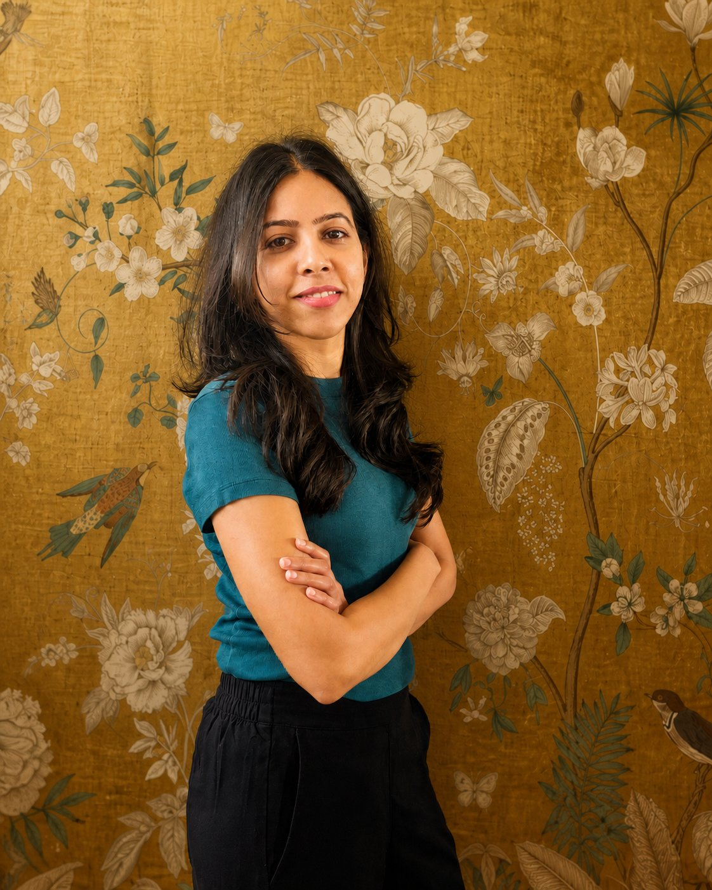
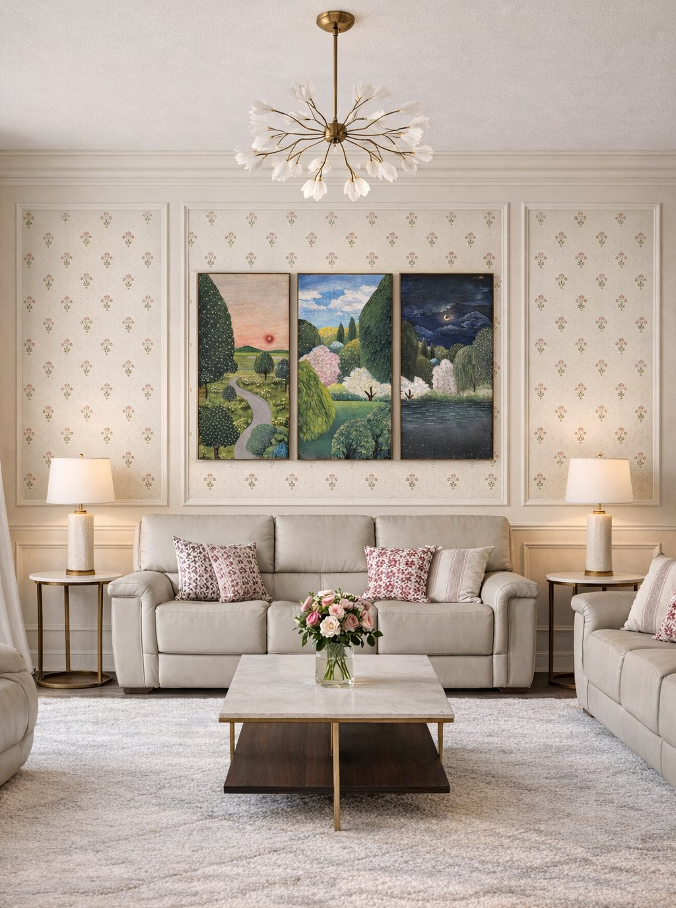

Residential Interiors
Full homes and focused rooms shaped around daily rituals, comfort and enduring character.
Interior Designer · Founder
Swatika is the founder of Open Storey, a San Francisco Bay Area interior design studio creating residential, retail and hospitality spaces where South Indian material richness meets contemporary California calm.


The Designer
Educated in Chennai, Barcelona and San Francisco, Swatika brings a cross-cultural point of view to every commission. Her work is attentive to natural light, movement, proportion and the emotional character of materials.
Her experience spans luxury residences, cinemas, boutique retail, hospitality and large-scale corporate interiors for brands including Cisco Systems, Target and Intuit. At Open Storey, that breadth becomes a deeply personal process: each space is composed around the people who will inhabit it.
“Design is not decoration — it is the art of making space feel inhabited before you arrive.”
Studio Services
Open Storey is based in California and welcomes selected projects in the Bay Area, across the United States and internationally.
Full homes and focused rooms shaped around daily rituals, comfort and enduring character.
Boutique environments with clear movement, memorable atmosphere and a strong sense of place.
Planning, finishes, lighting and object curation brought together as one coherent interior.
Vastu-informed guidance interpreted with sensitivity for contemporary homes and lifestyles.
Three Cities
Each place added a distinct lens: material intelligence in Chennai, international visual culture in Barcelona, and the quiet clarity of Northern California. The result is work that feels layered without feeling crowded.
Craft, color, hospitality and a tactile understanding of how culture lives through a space.
Global references, visual composition and confidence in translating between design traditions.
Contemporary restraint, natural light and a practice shaped for California and the wider world.
Selected Experience
Swatika’s work crosses residential, workplace, retail and hospitality settings, from intimate material moments to multi-floor environments.
Begin a Conversation
Share your location, goals and timeline in a complimentary 15-minute consultation. Open Storey welcomes residential and boutique commercial enquiries from the Bay Area and beyond.